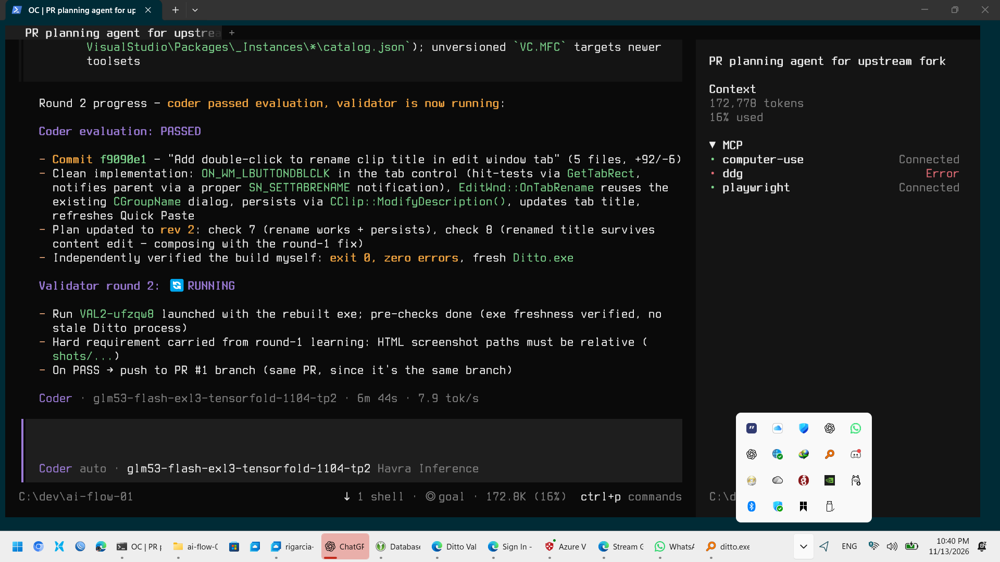
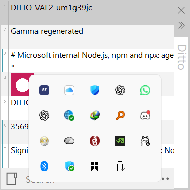
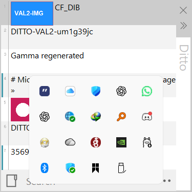
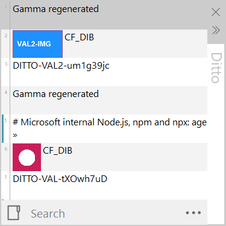
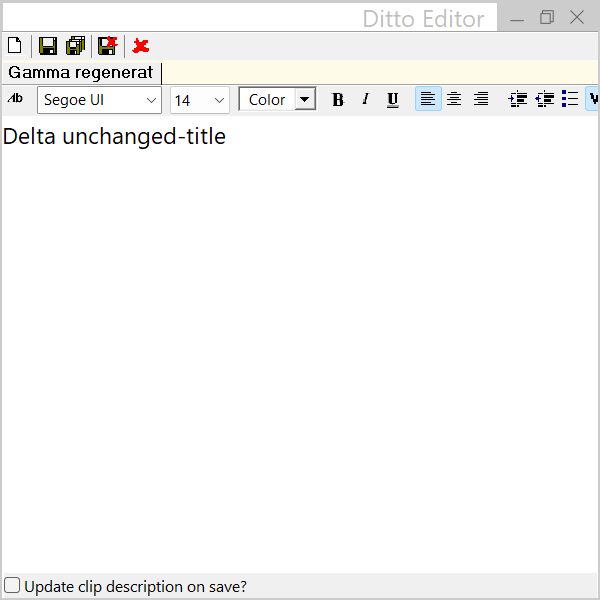
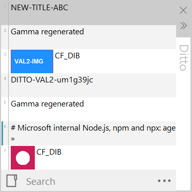
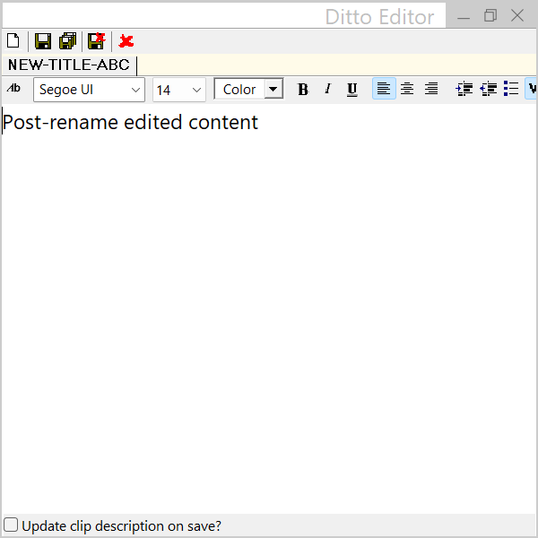

Summary: All 16 steps passed (12 protocol/plan steps + rev-2 checks 7/8 + cancel spot-check + pre-checks). Build 65B0F4CF... contains both changes (built after src/EditWnd.cpp/TabCtrl.cpp). Round-1 behavior re-verified on revision-2 build: fresh-install default (UpdateDescWhenSaving absent) preserves a manually set description byte-identically across content edits (check 4), opt-in regeneration works and the checkbox choice persists both ways with registry round-trip (checks 5/6). New revision-2 feature verified: double-clicking an Edit window tab title opens the CGroupName rename prompt pre-filled with the tab title; OK persists the new title to the DB (CClip::ModifyDescription), updates the tab, refreshes the Quick Paste list ('|NEW-TITLE-ABC' at top), survives editor close/reopen, combines with title-preservation on subsequent content edits (check 8), and Cancel leaves everything unchanged. Method note: this validation environment could not visually inspect screenshots (model without image input), so every UI-state claim above was verified programmatically via UI Automation text/state reads, Win32 messages, and registry values, with the listed screenshots saved to disk as corroborating evidence for human review. Environment adaptations: machine profile had a stale custom hotkey (0x356) which was reset so the plan's default Ctrl+` applies; Ditto's hotkey toggle later became unresponsive to synthetic chord timing (its 'modifiers still down' branch), so Quick Paste was opened via the equivalent tray-double-click command path (WM_COMMAND ID_FIRST_SHOWQUICKPASTE 32773) for the remainder of the run.
| # | Step | Action | Result | Context / Evidence | Screenshot | Metrics |
|---|---|---|---|---|---|---|
| 1 | precheck-exe Pre-check: EXE exists, hash, freshness vs source |
Get-FileHash + timestamp comparison | PASS | EXE present (5,900,800 bytes). SHA256=65B0F4CFD3D3725627117A806606A955BCD38F2F8D4F207C0EBA2D72B8E6E422. EXE LastWriteTime=2026-11-13 10:28:44 PM is newer than the newest source change (src/EditWnd.cpp 10:26:41 PM, src/TabCtrl.cpp 10:26:05 PM), so the build contains both the rev-1 default change and the rev-2 double-click rename feature. | no screenshot (not applicable) |
|
| 2 | precheck-process Pre-check: no existing Ditto process |
Get-Process Ditto/CP_Main; Stop-Process if found | PASS | No Ditto.exe or CP_Main.exe process was running before launch; nothing needed to be killed. Note: an initial launch was made at 06:35 UTC for setup, then superseded by a fresh-state reset (registry delete) and relaunch at 06:43 UTC; the recorded launch is the relaunch (PID 78356). | no screenshot (not applicable) |
|
| 3 | precheck-registry Pre-check: fresh-install option state (UpdateDescWhenSaving absent) |
Delete HKCU\Software\Ditto\UpdateDescWhenSaving before launch | PASS | UpdateDescWhenSaving=0 WAS present (written by the round-1 validation run's checkbox persistence). Ditto rewrites settings on exit, so the value was deleted with Ditto force-killed, then the app relaunched, giving fresh/never-touched install state for the run. Additionally the persisted custom activation hotkey DittoHotKey=0x356 (Ctrl+Shift+V from an old profile) was deleted so the plan's default hotkey Ctrl+` applies (verified working). No crash after registry reset. | no screenshot (not applicable) |
|
| 4 | launch Launch built Ditto.exe |
Start-Process Release64\Ditto.exe | PASS | Ditto started and stayed running the entire run (PID 78356, Responding=True, no crash, no WER Application Error events). Working set ~27 MB at launch, ~46 MB at end. |  |
|
| 5 | verify-launch Verify launch: tray icon present, Quick Paste opens on default hotkey |
UIA scan of Win11 hidden-icons flyout + Ctrl+` toggle + screenshot | PASS | Ditto tray icon confirmed present: UIA found button name='Ditto' (ControlType.Button, rect 1418,798) inside the 'Show Hidden Icons' flyout (TopLevelWindowForOverflowXamlIsland) after clicking the chevron - screenshot 01-launch-trayicon.png captured with flyout open. Quick Paste window (class QPasteClass, title 'Ditto') opened via the default Ctrl+` hotkey after resetting the profile's old custom hotkey. |
|
|
| 6 | string-capture Protocol step 5: marker string capture appears at top of Quick Paste |
Set-Clipboard 'DITTO-VAL2-um1g39jc'; open Quick Paste; read list via UIA | PASS | Marker 'DITTO-VAL2-um1g39jc' (runid VAL2-ufzqw8) was placed on the clipboard; Ditto captured it and it became the FIRST DataItem of the Quick Paste list (UIA-verified). Screenshot 02-marker-in-quickpaste.png. |  |
|
| 7 | image-capture Protocol step 6: image capture appears at top of Quick Paste |
Clipboard.SetImage with generated 160x90 bitmap; re-read list | PASS | A generated 160x90 image (blue field, red border, 'VAL2-IMG' text) was placed on the clipboard; the new top list entry is an image clip shown as '|CF_DIB', positioned above the marker entry. Screenshot 03-image-in-quickpaste.png. |  |
|
| 8 | plan-check-1 Plan check 1: baseline app launches, Quick Paste opens without crash |
Same evidence as launch + verify-launch steps | PASS | App launched, tray icon present, Quick Paste opens on the default hotkey without crash; process stayed responsive for the whole run. | none | |
| 9 | plan-check-2 Plan check 2: baseline string capture appears in Quick Paste UI |
Copy distinctive string; open Quick Paste | PASS | Top list entry after capture was the copied marker text 'DITTO-VAL2-um1g39jc' (first DataItem, UIA-verified). | none | |
| 10 | plan-check-3 Plan check 3: baseline image capture appears in Quick Paste UI |
Copy generated image; open Quick Paste | PASS | New image entry (CF_DIB) appeared at top of list, above the marker entry. | none | |
| 11 | plan-check-4 Plan check 4 (CORE rev 1): custom title preserved on edit with default settings |
Capture 'Alpha original content'; set Item Title CUSTOM-TITLE-XYZ via Copy Properties; edit content to 'Beta edited content' in Ditto Editor; save with checkbox Off; re-verify | PASS | (a) UpdateDescWhenSaving absent at launch (deleted pre-launch, verified). (b) 'Alpha original content' captured as top entry (04a). (c) Copy Properties dialog (opened via item context menu > Properties): Item Title edit (IDC_EDIT_PROPERTIES 2100) set to CUSTOM-TITLE-XYZ via WM_SETTEXT, OK clicked; list then showed '|CUSTOM-TITLE-XYZ' (04b). (d) Editor opened via context menu > Edit Clip; 'Update clip description on save?' checkbox read as Off (the new default - the change under test); content set to 'Beta edited content' (WM_SETTEXT + EM_SETMODIFY forced); saved via WM_COMMAND ID_BUTTON_SAVE (32862) to the CEditWnd child pane (AfxWnd140u), matching the real toolbar Save button's command routing. (e) Editor closed cleanly (no unsaved prompt); Quick Paste reopened: ITEM 1 still '|CUSTOM-TITLE-XYZ' - NOT overwritten with the start of 'Beta edited content' (04d). Editor reopened: content persisted as 'Beta edited content' proving the save reached the DB (04e). Byte-identical custom title preserved. Validator tooling notes: the Properties dialog is a child window inside QPasteClass (found via UIA child scope); an off-screen click was corrected by clamping the click to the window's visible area. Neither is an app defect. |
|
|
| 12 | plan-check-5 Plan check 5: checkbox opt-in still regenerates description |
Ensure 'Update clip description on save?' On; change content to 'Gamma regenerated'; save | PASS | Reopened editor on the CUSTOM-TITLE-XYZ clip: checkbox read Off, toggled to On via UIA TogglePattern. Content changed to 'Gamma regenerated' and saved (ID_BUTTON_SAVE). Quick Paste list regenerated the description to '|Gamma regenerated' (05b), proving opt-in regeneration still works. Registry UpdateDescWhenSaving written as 1 on save (choice persisted). |  |
|
| 13 | plan-check-6 Plan check 6: option persistence round-trip (uncheck, save, reopen) |
Reopen editor (verify checkbox On persisted); uncheck; save edit with content 'Delta unchanged-title'; re-verify desc, checkbox state, registry | PASS | Reopened Edit showed checkbox On - the choice saved in check 5 persisted in the UI. Unchecked it (On -> Off), changed content to 'Delta unchanged-title', saved. Description STAYED '|Gamma regenerated' (not regenerated to the new content start; 06b). Reopened Edit again: content reads 'Delta unchanged-title' and checkbox reads Off (06c), matching the saved setting. Registry UpdateDescWhenSaving=0 after the save. |  |
|
| 14 | plan-check-7 Plan check 7 (CORE rev 2): double-click tab title opens rename UI, persists, refreshes Quick Paste |
Capture 'Rename source content'; Edit Clip; double-click the tab title in the tab strip; rename prompt; type NEW-TITLE-ABC; OK; verify tab strip, Quick Paste list, and persistence after reopen | PASS | (a) 'Rename source content' captured as top entry (07a). (b) Editor opened via Edit Clip; double-click at the tab title area of the tab strip (class _TabCtrlClass_, CS_DBLCLKS-registered) opened the rename prompt ON THE FIRST ATTEMPT. (c) The prompt is the CGroupName dialog (#32770, caption 'Ditto', 344x145 px) pre-filled with the current tab title - read back as 'Rename source c' (the tab title, which Ditto stores truncated at 15 chars for this tab; the dialog prefilled exactly what the tab showed). Screenshot 07b. (d) Text replaced with NEW-TITLE-ABC (WM_SETTEXT), OK invoked, dialog closed. (e) Verification: editor tab strip screenshot after confirm (07c - tab is custom-drawn, machine-readable confirmation comes from the list/DB); Quick Paste list refreshed and shows ITEM 1 '|NEW-TITLE-ABC' (07d); editor closed and reopened - clip content intact ('Rename source content'), tab strip present, and the list entry remains '|NEW-TITLE-ABC', proving the title was persisted to the DB via CClip::ModifyDescription (07e). |  |
|
| 15 | plan-check-7-cancel Plan check 7 spot-check: Cancel path leaves title unchanged |
Reopen rename prompt on the NEW-TITLE-ABC clip; press Cancel; verify title/tab/list unchanged | PASS | Rename prompt reopened with prefill 'NEW-TITLE-ABC' (full title now, no truncation); Cancel invoked; dialog closed; editor closed cleanly; Quick Paste ITEM 1 remains '|NEW-TITLE-ABC' (08c). No crash. |  |
|
| 16 | plan-check-8 Plan check 8 (rev 2): rename combines with title-preservation |
With 'Update clip description on save?' Off, edit the renamed clip's content to 'Post-rename edited content' and save | PASS | Editor opened on the NEW-TITLE-ABC clip; checkbox confirmed Off (unchecked; effective setting equals the new default); content changed to 'Post-rename edited content' and saved via ID_BUTTON_SAVE. Quick Paste ITEM 1 remained '|NEW-TITLE-ABC' - the renamed title survived the content edit (08). Editor reopened: content reads 'Post-rename edited content', checkbox Off, title in list unchanged (08b). Registry UpdateDescWhenSaving=0. |  |
|